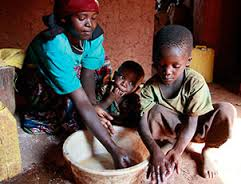
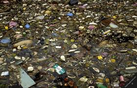
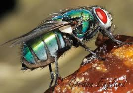

MAAMBUKIZI YA UGONJWA
WA KIPINDUPINDU:
WA KIPINDUPINDU:
Kwanza kabisa tunapaswa kutambua kuwa ugonjwa huu unapitikana kwa kupitisha vimelea kwenye mdomo na hizi zifuatazo ni baadhi ya njia ambazo unaweza kupata ugonjwa huu:
1.Kula chakula au kunywa kinywaji chochote kilicho na vimelea vya ugonjwa wa kipindupindu kwa mfano:-
-Kunywa maji yasiyochemshwa au kutiwa dawa
-Kula matunda au mboga za majani zisizooshwa na mbichi
2.Kunawa mikono kwenye chombo kimoja kwa mfano ndani ya bakuli au beseni kabla ya kula chakula.

3.Kuweka mazingira katika hali ya uchafu mfano kutupa taka ovyo bila kuzingatia kanuni za afya.

4.Nzi ambaye ni msambazaji mkubwa wa kipindupindu kwa tabia zake za kuchukua kinyesi na kukisafirisha kwenye vyakula au hata maji
